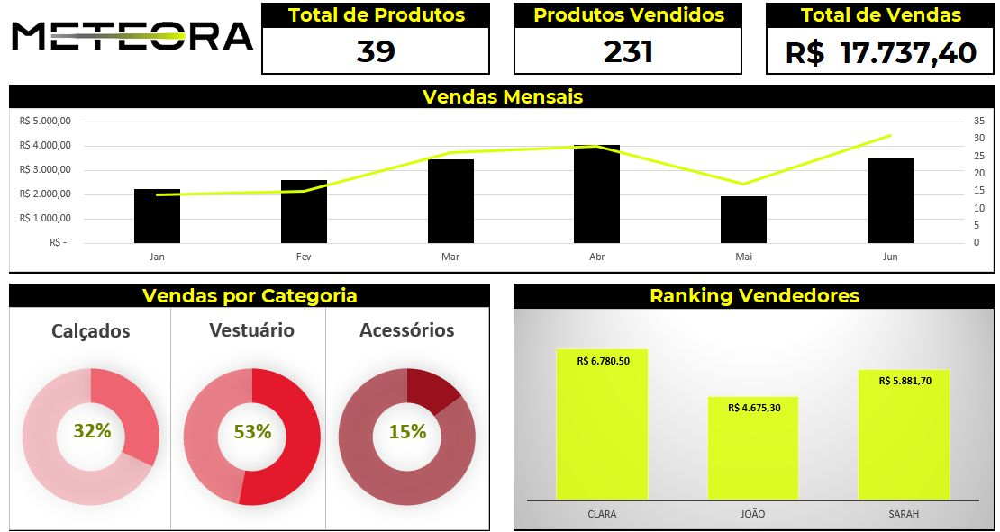

×
Dashboard - Meteora
Criei um dashboard no Excel para visualizar as vendas da Meteora de forma clara e organizada. Ele mostra a porcentagem de vendas por categoria de produtos (acessórios, calçados e vestuário), as vendas mensais e informações importantes como o total de produtos, produtos vendidos e o total de vendas.
Utilizei gráficos de rosca, gráficos de barras e cartões, onde foi utilizado algumas formulas como somase, cont.valores para apresentar os dados de forma visual e intuitiva.

Excel Dashboard | Visualização de Dados | Análise de Vendas